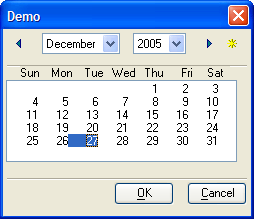
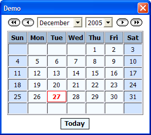

UI_GET_DATE_CALENDAR()
Syntax
Result_String as C = UI_GET_DATE_CALENDAR( Title as C, Default_Date_String as C [, Style as C ] )
|
Argument |
|
Description |
|
Result_String |
V5 |
Selecting a date returns that date and closes the dialog.
Clicking Cancel returns a NULL string. Closing the dialog with |
|
Title |
V5 |
The title of the dialog box. |
|
Default_Date_String |
V5 |
A default value to display in the date field. |
|
Style |
V6 |
Optional. The CSS style sheet to use. Use A5_CSS_LIST()to
retrieve a list of style sheets provided with Alpha Five. The value " |
Description
UI_GET_DATE_CALENDAR() creates and displays a dialog box containing a calendar. This function is useful for obtaining a valid date. When the user clicks on a date value, the calendar is closed and Result_String contains the date value that the user selected.
You can then convert the Result_String into a date value using the CTOD()function. You specify the title of the dialog box with the Title parameter.
If you call UI_GET_DATE_CALENDAR() without a Style parameter
and the View > Settings > Preferences > Calendar
popup style
is set to "
The Xdialog style calendar has OK and Cancel buttons. The HtML style calendar does not.
 
 Note : If you have
changed the Xdialog system font setting from its default value, you should
use HTML style display. To enable HTML style display, select View
> Settings > System > Preferences > Calendar Popup.
Select Style and a cascading style sheet from
the Value list.
Note : If you have
changed the Xdialog system font setting from its default value, you should
use HTML style display. To enable HTML style display, select View
> Settings > System > Preferences > Calendar Popup.
Select Style and a cascading style sheet from
the Value list.
If you use the Xdialog style, you should have your Xdialog system font
setting at its default value (Tahoma 8 point). To restore the default
font setting select View > Settings > System > System Fonts >
Restore Default.
These settings also affect POPUP.CALENDAR()and
A5_GETDATEHTML().
Limitations
Desktop applications only.
Example
This script computes the day on which you were born.
|
dim birthday as D date_string = ui_get_date_calendar("When is your birthday? ", "11/11/68") birthday = ctod(date_string) ui_msg_box("Happy Birthday!","You were born on a " + cdow(birthday)) |
See Also
((User Interaction _UI_ Functions|User Interaction (UI) Functions)), Date and Time Functions